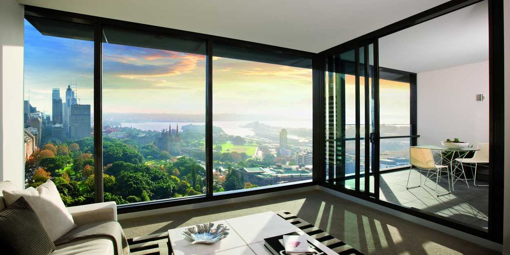

Начав свою деятельность в 1995 году со штатом сотрудников в 26 человек и производством, которое размещалось всего на 450 квадратных метрах, сегодня Мастер Омск входит в тройку российских лидеров по объему производства, владеет тысячами квадратных метров производственных площадей и складских помещений, и штатом 2000 человек.
Сегодня дилерами компании Мастер Омск являются более 300 организаций из Омска, Томска, Кемерово, Барнаула, Иркутска, Владивостока, Южно-Сахалинска и ряда других городов Сибири и Дальнего Востока. В том числе и, благодаря дилерской сети, география поставок продукции Мастер Омск охватывает значительную часть России, а также Украину и Казахстан. Наша дилерская сеть продолжает расти.
Для Мастер Омск краеугольный камень такой философии — взаимоотношения с клиентом и ответственность за качество своей продукции. Наша компания руководствуется этим на протяжении всего периода своего существования.
-
- В середине 90-х годов строительная отрасль была в упадке. Вложение денег в производство
пластиковых окон было рискованным предприятием, тем более, что про них в России знали
немногие. Но акционеры пошли на этот риск, и 4 октября 1995 года была создана компания
Мастер Омск, которая занялась производством и установкой окон из пластикового профиля.
- Изначально в компании работало всего 26 человек, объем выпуска продукции — 70 м² оконных
блоков в день.
-
- Мастер Омск преобразуется в Производственную Группу, у которой несколько направлений работы:
производство, установка, гарантийное и послегарантийное обслуживание оконных пластиковых
систем. Этот год проходил под флагом расширения и реструктуризации: появляется вторая
производственная линия и общая производительность увеличивается до 100 м². оконных
блоков в день. Появляется оборудование для сборки стеклопакетов производительностью 200
единиц в сутки. На предприятии работает уже 56 человек. В производстве пластиковых окон
начинает применяться двойной стеклопакет, который увеличивает теплоизоляцию.
- В связи с ростом числа заказов, приобретается оборудование по производству собственных
пластиковых профилей — экструзии. На предприятии появилось новое производство
«Мастер Омск-Экструзия».
- В конце 1996 года организуется и еще одно новое подразделение — ООО «Мастер Омск-Алюминий».
- Компания руководствуется лозунгом: «Когда речь идет об окнах — мы предлагаем качество».
-
- Вслед за приобретением в 1996 году экструзионного оборудования, в Мастер Омск создается
собственное конструкторское бюро, что стало следующим этапом развития промышленной
группы. Это позволяет разрабатывать и выпускать новое оборудование, инструменты и
изделия. Первой разработкой КБ стала трехкамерная оконная система Мастер Омск-97, которая была в
3 раза дешевле импортных аналогов, ни в чем не уступая им по качеству.
- Производительность увеличивается до 140 м². в день, а количество работающих до 100
человек.
- Повышая качество обслуживания клиентов, компания Мастер Омск организует специальное
подразделение, которое выполняет сервисное и гарантийное обслуживание клиентов.
Уверенность в высоком качестве изделий позволила Мастер Омск установить гарантийный срок на свою
продукцию в 10 лет. Появляется новый лозунг, отражающий принципы работы компании: «Мастер Омск».
Надежность. Сегодня и навсегда«.
-
- 1998 год стал памятным для всей российской экономики. Несмотря на кризис, Мастер Омск удалось не
только удержать свои завоевания, но и приобрести в собственность цех площадью 8000 м².
на заводе им. Кузьмина. Компания Мастер Омск уже заняла прочные позиции на рынке. Предприятие
продолжает расти. Расширяется штат специалистов, внедряются изобретения и инновации, так
применение большего количества запирающих элементов в фурнитуре, позволило повысить
герметичность окна на 20%.
-
- Производительность цеха ПВХ-окон в 1999 году увеличивается до 180 м² в смену, а
количество сотрудников увеличилось до 115 человек.
- Конструкторское бюро Мастер Омск, используя уникальное программное обеспечение, разрабатывает
техническую документацию и конструкторские чертежи для изготовления фильер, которые
применяются для производства разнообразных профильно-погонажных изделий. Таким образом,
были созданы:
-
- пятикамерная профильная оконная система серии МТ;
- уголки для внутренней и внешней отделки оконных конструкций;
- система стартовых профилей для монтажа оконных откосов;
- подоконники.
- Заслуги компании были отмечены дипломом Всероссийского конкурса на лучшее предприятие
строительной отрасли II степени.
-
- 2000 год ознаменовался новым этапом модернизации. Осваиваются новые производственные
площади на территории завода имени Кузьмина. Объемы выпуска продукции увеличиваются до
240 м² в сутки. Значимым событием становится организация службы контроля качества
производства.
- У Мастер Омск стали появляться заказчики из других городов Сибири. Начинает развиваться
региональная дилерская сеть от Урала до Сахалина.
-
- В 2001 году компания Мастер Омск выводит на рынок собственные разработки — пятикамерную систему
Ecological Systems Extra и подоконник.
- Количество сотрудников в компании увеличивается до 230 человек.
- Появляется производственная линия в Красноярске производительностью 70 м². готовых
изделий в день.
- В производство оконных блоков вводится использование пенополиуретанового уплотнителя
вместо каучукового, эта инновация дает повышение герметичности окна в условиях низких
температур.
- Разработано уникальное учебно-методическое пособие по монтажу окон для
проектно-монтажных организаций.
- 25 сентября 2001 года на Берлинской конференции «Инвестиции в России» по отчету
INTERACTIVE RESEARCH GROUP производственная группа Мастер Омск была названа в числе наиболее
динамично развивающихся предприятий России наряду с ОАО МК Шатура, концерном «Калина»,
предприятием «Gloria Jeans» и др. А в России Мастер Омск вручают золотую медаль Сибирской
ярмарки «СтройСиб 2001».
-
- В 2002 продолжается рост компании. Качество продукции и высокий уровень сервиса
позволяют выходить на всё более широкий круг потребителей. Открывается собственная
испытательная лаборатория. По результатам испытаний окна компании Мастер Омск соответствуют
высшему классу А.
- Внедрение контроля качества позволяет компании Мастер Омск давать трехлетнюю гарантию на
монтажные работы.
- Высокий уровень качества продукции Мастер Омск отмечается золотой медалью Сибирской Ярмарки
«Стройсиб 2002».
-
- Внедряется серия новых технологий. Использование в стеклопакете дистанционной рамки из
ПВХ вместо алюминиевой, позволяет на 7% улучшить теплозащитные характеристики
стеклопакета. Применение теплового экрана позволяет производить монтаж оконных
конструкций даже в условиях сильного мороза, при этом в помещении практически не
понижается температура.
- «Мастер Омск-Экструзия» переориентируется на производство околооконных профилей.
- Достижения компании отмечаются вручением диплома «Омская марка», а компания TBM
(крупнейший поставщик фурнитуры и материалов для монтажа пластиковых окон) награждает
производственную группу Мастер Омск за самый большой объем закупок в регионе.
- В традицию вошли благотворительные акции: помощь детским учреждениям, инвалидам. У Мастер Омск
два подшефных учреждения — социально-реабилитационный центр Железнодорожного района
города Омска и Ояшенский дом для детей инвалидов.
- Философия компании фокусируется в лозунге «Лидерство — это ответственность».
-
- В 2004 году была освоена еще одна производственная площадка на территории завода
«Сибтекстильмаш». Специалисты «Мастер Омск-Экструзия» первыми в России успешно начали выпуск и
использование дистанционной рамки из ПВХ для решения проблемы «краевых зон». По объемам
и уровню развития производства Мастер Омск входит в число десяти ведущих компаний России в своей
отрасли.
- По итогам 2004 года компания «Мастер Омск-Алюминий» увеличивает объем производства, по сравнению
с 2003 годом, более чем на 40%. Сдано сразу несколько крупных объектов: Банк «Акцепт»,
Бизнес центр на Инской, галерея Фестиваль и др.
- География поставок продукции Мастер Омск охватывает значительную часть территории России, а
также Украину и Казахстан. В 2004 году Мастер Омск и дилеры компании увеличивают срок гарантии
на монтажные работы до 10 лет.
- В июле этого же года начался процесс внедрения новейшей компьютерной программы, которая
позволяет мгновенно находить всю информацию по работе с клиентом, начиная с первого
звонка и заканчивая гарантийным и послегарантийным обслуживанием, а также в режиме
реального времени получать от заказчика оценку деятельности фирмы и вносить необходимые
коррективы в работу.
- Предприятие награждается Золотой статуэткой «ГЕММА» и Дипломом Межрегионального конкурса
«Лучшие товары и услуги Сибири. ГЕММА-2004» за высокое качество оказываемых услуг.
Директор ЗАО Мастер Омск М.А.Якубенко стал лауреатом награды «За успешное развитие бизнеса в
Сибири». Компания получает официальный статус «Надежный партнер».
- ЗАО Мастер Омск удостоено диплома и благодарственного письма мэра г. Омска в конкурсе
«Социальная ответственность бизнеса».
- Общественный благотворительный фонд «Меценаты столетия» наградил Мастер Омск «Золотой грамотой
мецената».
-
- Производственная группа Мастер Омск объединяет четыре компаний, в штате которых работает более
1200 человек, высококвалифицированного персонала. Производственные площади занимают
более 20 000 м²етров. Компания полностью перешла на автоматизированное производство.
Бурно развивается дилерская сеть.
- Очередной новацией компании становятся применяемые в ЗАО Мастер Омск узлы монтажа с системой
дополнительных профилей. Проектные решения этих узлов монтажа впервые в России
сертифицированы на соответствие требованиям ГОСТ 30971-2002 и СНиП 23-02-2003. Все это
позволило улучшить теплотехнику окна. На Всероссийском конкурсе на лучшую конструкцию
окна «Золотая рама» в номинации «Оригинальное техническое решение монтажного узла»
компания Мастер Омск становится победителем.
- В 2005 году была произведена реконструкция и переезд на новые производственные площади
предприятия «Мастер Омск-Экструзии», которые составили 11 000 м². Одновременно был увеличен
вдвое станочный парк.
- Основным событием года для «Мастер Омск Алюминий» становится получение патента на изобретение
новой системы структурного остекления. Система выгодно отличается от существующих
сокращением сроков проектирования, расчета стоимости и монтажа объектов, упрощением
процесса сборки конструкции при сохранении прочностных характеристик изделия,
удешевлением конструкции. Данную технологию предприятие активно продвигает на рынке
светопрозрачных конструкций города Омска и в регионах.
- «Мастер Омск-Енисей» — отмечает свое пятилетие. Как одно из самых динамично развивающихся
предприятий «Мастер Омск- Енисей» занимает лидирующие позиции среди производителей пластиковых
окон Красноярского края. Компания выходит на производительность в 11 000. м² готовых
окон ПВХ в месяц. В связи с растущими объемами производственные площади расширяются до
9000 м²етров.
- Продукция компании Мастер Омск представлена на выставке «СТРОЙСИБ-2005 г». ПГ Мастер Омск признана
Лучшим предприятием стройиндустрии 2004 года и отмечена медалью и дипломом Администрации
Омской области.
- Остается неизменным один из основных постулатов компании — забота о потребителях,
высокий уровень обслуживания клиентов и ответственность за качество своей продукции.
- В октябре 2005 года отмечается 10-летний юбилей предприятия.
-
- Расширение партнерской сети компании Мастер Омск. Количество специалистов, работающих в ПГ Мастер Омск,
увеличивается до 1500 человек.
- Для всех сотрудников компании прописываются стандарты, выполнение которых — залог того,
что каждый клиент Мастер Омск получает продукцию и услуги высокого качества.
- Работа компании характеризуется емкой фразой — «Чтобы мир стал удобным».
- Мастер Омск сегодня — это две производственные площадки по производству окон — в Омске и
Красноярске. Общая площадь производственных площадей более 17000 м² (не считая
экструзионного предприятия). Производственные мощности после последней модернизации
составляют более 70000 м². изделий из ПВХ в месяц. Это один из лучших в стране
показателей. В компании работает более 1600 сотрудников. Объем производства окон за
последние 5 лет увеличился в 5,5 раз и превысил в 2006 г. 340 000 м².
- 2006 год для компании Мастер Омск-Эструзии ознаменовался выводом на рынок 5 новых видов
профилей.
- Все технологии, разработанные Мастер Омск, содержат в себе элемент новизны —использование при
производстве окон дистанционной рамки из ПВХ, оригинальное техническое решение
монтажного узла, позволяющее повысить гарантийный срок эксплуатации окна — все это
закрепило за предприятием статус инновационного. Продукция компании Мастер Омск позволяет
реконструировать застройки прошлых лет и планировать создание новых зданий и целых
кварталов с современным дизайном и высокой энергоэффективностью.
- Также компания освоила собственное производство алюминиевых жалюзи и рулонных штор.
Алюминиевые жалюзи Isolite спроектированы специально для крепления непосредственно на
ПВХ окна, при закрытии их ламели собираются в «пакет» наверху. Они легко монтируются на
окно вплотную к стеклопакету, не занимая при этом дополнительную площадь подоконника и
не препятствуя открыванию створки. Новая система рулонных штор Rollite легко монтируется
на пластиковое, алюминиевое или деревянное окно европейского стандарта. Это шторы из
тканого полотна, которые, поднимаясь, скручиваются в рулон.
- В ноябре 2006 года ЗАО Мастер Омск получила свидетельство на товарный знак («Мастер Омск пластиковые
окна» с фирменной сине-оранжевой символикой) в Федеральной службе по интеллектуальной
собственности. Это позволило закрепить за компанией ее фирменный знак и присекать факты
его незаконного использования.
- ЗАО Мастер Омск было отмечено дипломом «Народное признание» и золотой медалью конкурса «Лучшие
товары и услуги Сибири ГЕММА-2006».
- За высокие производственные показатели предприятие Мастер Омск занесено на Доску почета г.
Омска.
-
- Мастер Омск — один из признанных лидеров российского рынка светопрозрачных конструкций. Высокое
качество комплектующих, сборки и сервиса, автоматизация процессов, внедрение
инновационных продуктов и технологий — главные слагаемые долгосрочного успеха компании.
- В части нового строительства в 2007 году доля Мастер Омск в Омске составила 25%, в
Красноярске — около 20%. В регионах только начали выход в этот сегмент. Цель — те же
25%. На рынке реконструкции доля Мастер Омск в Омске и Красноярске составила около 30%. В
целом объем производства по ПВХ-окнам увеличился с 335 тыс.м². в 2006 г. до 446 тыс.м².
в 2007 г.
- Наши производственные мощности на сегодняшний день составляют около 100 000 м².
конструкций из ПВХ (не считая алюминия) в месяц — более чем достаточно, чтобы ежедневно
остеклять нескольких многоэтажек. За два месяца работы компания способна закрыть годовую
потребность в оконных конструкциях жилых новостроек таких городов как Омск, Омск
или Красноярск.
- В 2007 году, предприятия Производственной Группы Мастер Омск объединила под своим началом
Управляющая Компания Мастер Омск. На нее возложены функции стратегического управления брендом,
координация деятельности всех производственных площадок компании, реализация единой
политики на уровне всего бизнеса компании.
- Мастер Омск-Экструзия, основанная в 1997 году как предприятие производитель отделочных
материалов из жесткого ПВХ, отметило свое 10-летие. На сегодняшний день предприятие
перерабатывает более 8000 тонн ПВХ-композиций в год. Продолжается работа над
формированием полной линейки продуктов для монтажа и отделки оконных и дверных проемов.
- В области маркетинга ужесточение конкуренции диктует новые подходы. в 2007 году было
выделено два новых направления. Мастер Омск-Эксперт фокусируется на комплексном обслуживании
строительных и девелоперских компаний. К высокому качеству и точным срокам производства
больших объемов работ, мы добавляем возможность для заказчиков получить из одних рук
весь спектр услуг по остеклению окон, лоджий, входных групп, фасадов, крыш, устройству
внутренних перегородок, межкомнатных дверей. И этот список услуг будет расширяться.
Направление Мастер Омск-Персона начинает целевым образом заниматься обслуживанием перспективного
рынка малоэтажного строительства. Современные технологии светопрозрачных конструкций
позволяют осуществить практически любые фантазии архитекторов, дизайнеров и владельцев
загородных домов. Мы в полной мере обладаем этими возможностями, и хотим, чтобы с нами
было удобно и приятно реализовывать эти фантазии на практике.
- 2007 год — это год решительного выхода компании в регионы. А также новый этап в
повышении качества и сервиса наших услуг. Весной филиалы компании появились в городах:
Томск, Кемерово, Новокузнецк, Абакан и Омск. В значимых городах были организованы склады
(логистические центры) готовых изделий и дополнительной комплектации.
- Компания не останавливается на достигнутом и развивается дальше, оперативно реагируя на
тенденции рынка светопрозрачных конструкций.
-
- Развитие отдела корпоративных продаж в регионах.
- Осенью 2008 года холдингом был выпущен двух миллионный м² продукции. К цифре в 1 миллион
компания шла 12 лет, а 2 миллиона достигли за 2 года. Мастер Омск — первая по объемам
производственных мощностей компания в России.
- Мастер Омск-Экструзия выпустила эксклюзивный продукт — двери из вспененного ПВХ «AquaDoor.»
-
- По итогам второй недели международного строительного форума «СтройСиб 2009», прошедшей с
17 по 20 февраля, межкомнатные двери «AquaDoor» были отмечены малой Золотой медалью.
- В кризисный год рынку были предложены специальные продукты, ориентированные на клиентов
с низкой платежеспособностью: Сибмастер (4-х камерное окно) и Народное окно (3-х
камерное).
- Мощности производственных площадок в Омске и Красноярске практически сравнялись и
составляют в совокупности 1 млн. м² в год. Таким образом, в настоящее время Мастер Омск — первая
по объемам производства компания в России.
-
- Основным событием года становится 15-летний юбилей компании, который был ознаменован
рядом праздничных мероприятий, памятными подарками для клиентов, партнеров и сотрудников
компании.
- Компания Мастер Омск занимает первое место в рейтинге крупнейших компаний рынка пластиковых окон
по объемам выпускаемой продукции (по данным ИЦ «Современные Строительные Конструкции»).
- Мастер Омск-Эксперт закончил работы по остеклению гостиничного комплекса Double Tree By Hilton с
общей площадью остекления более 5000 кв. м. Специалистами компании были разработаны
технические решения сложных узлов фасадов зданий гостиницы и бизнес-центра, выбран
оптимальный вариант остекления с самыми высокими показателями светопропускания и
энергоэффективности.
- Предприятия производственной группы в течение года получили ряд наград. Так, Мастер Омск-Эксперт
был отмечен Почетной грамотой Администрации Омской области. Компания Мастер Омск стала
победителем конкурса «Лучшее предприятие стройиндустрии» «Омская марка», а
«Мастер Омск-Экструзия» одержала безоговорочную победу в межрегиональном конкурсе «Лучшие товары
и услуги — ГЕММА».
- Компания Мастер Омск приняла активное участие в областной программе «Школьное окно»,
инициированной Правительством Омской области. В результате была осуществлена
замена окон в 9 школах в г. Омске и по Омской области.
- В г. Кемерово состоялось открытие второго торгово-выставочного зала компании Мастер Омск по
адресу б-р Строителей, 22. Теперь жителям Ленинского района будет удобно прийти в офис,
чтобы познакомиться с обширным ассортиментом продукции компании и воспользоваться
выгодными предложениями.
-
- Широкий ассортимент продукции компании Мастер Омск пополнился рядом новинок, которые помогут
сделать дом комфортным и безопасным:
-
- ролетные антимоскитные сетки (удобно «прячутся» в короб, расположенный над
окном, не требуют демонтажа системы в зимний период);
- противовзломная фурнитура с противоходом (позволит значительно увеличить время
проникновения и станет непреодолимым препятствием для грабителя);
- фурнитура ROTO Komfort (его ручка расположена внизу на горизонтальной части
створки, поэтому достать ее можно даже сидя);
- подъемно-раздвижные двери VEKASLIDE (обладают превосходной тепло-и
звукоизоляцией, благодаря плотному запиранию, значительно экономят место в
помещении).
- Компанией Мастер Омск проведена реконструкция концертного зала Омской филармонии, за что
специалисты компании были награждены почетной грамотой министерства строительства Омской
области.
- Компания Мастер Омск стала финалистом конкурса «HR-бренд 2011». По словам организаторов
конкурса, наша компания просто «ворвалась» в финал, учитывая статус и масштаб остальных
корпораций-участников: Adidas Group, Coca Cola и др.
- В очередной раз компания Мастер Омск стала лауреатом премии «Омская марка».
- В начале года было принято решение о расширении производственных помещений и увеличении
станочного парка на Омском оконном производстве ориентировочно на 35%. Новый цех
компании заработал уже в мае.
-
- Первый юбилей — 5 лет успешной работы — отметили филиалы компании Мастер Омск в городах Омск,
Томск, Кемерово и Новокузнецк. За эти годы были выполнены работы на многих интересных
объектах, формирующих облик СФО. И лучшим подарком к юбилею стало открытие нового
фирменного торгового зала компании Мастер Омск в Омске на проспекте К. Маркса, а также
региональных складов в Барнауле и Иркутске, которые позволили оптимизировать
логистические процессы и расширить границы географического присутствия компании Мастер Омск.
- Компания Мастер Омск представила очередные новинки:
-
- Нордмастер-дизайн (пластиковое окно с алюминиевыми накладками, которые придают
окну дополнительную эстетику и позволяют защитить его от внешнего воздействия,
тем самым увеличивая его срок службы);
- энергоэффективное окно GROSSMASTER из многокамерного профиля VEKA SOFTLINE 82
(настоящий «гость из будущего», потому что при его создании руководствовались
теми нормами по теплотехнике, которые вступят в действие в Европе в 2015 году).
- Произведены инвестиции в расширение мощностей красноярского оконного производства.
- Компания Мастер Омск стала победителем всероссийского конкурса «100 лучших предприятий России» в
номинации «Лучшее предприятие стройиндустрии», а также руководитель и специалисты
компании были награждены юбилейными медалями «За вклад в развитие Омской области»
в честь 75-летия области.
-
-
- В линейке продукции холдинга появился ряд высокотехнологичных, даже уникальных,
продуктов, отвечающим всем нормам и требованиям современного дизайна. Появились такие
новинки, как мансардные окна, дерево-алюминиевые окна, а также алюминиевые конструкции
из анодированного профиля, а в топовом продукте – оконной системе Grossmaster – с 2014
года в базовую комплектацию включено мультифункциональное стекло.
- В г. Тюмень открыт региональный склад компании, обеспечивающий потребности
корпоративного направления, активно развивающегося в данном регионе, и перспективного
дилерского сегмента.
- В г. Красноярск проведена реконструкция торгового зала фирменной сети компании Мастер Омск,
расположенного на ул. 78 Добровольческой бригады, 14а. Теперь торговый зал полностью
соответствует современным европейским требованиям, оснащен всеми необходимыми ресурсами
и выставочными образцами продукции.
- Открытие обновленного торгового зала в г. Томск. Теперь торговый зал встречает своих
гостей контрастными синими линиями, яркими логотипами Мастер Омск и уютным освещением, а также
европейским дизайном.
- Значимое событие в компании «Мастер Омск-Экструзия» - открытие нового логистического центра в
Омске, который представляет собой 6 000 кв. м закрытых теплых складских помещений
и 6 000 кв. м открытых площадей. Кроме того, открыт новый магазин «Мастер Омск-Экструзия» под
брендом «Самоделкин».
Награды компании:
- Благодарственное письмо от Губернатора Красноярского края «За активное участие во
Всероссийском Конкурсе «100 лучших товаров России» и производство продукции высокого
качества»;
- Компания Мастер Омск вошла в число лидеров «Книги рейтингов» журнала «Деловой квартал»;
- Компания Мастер Омск вошла в ТОП-100 крупнейших компаний области;
- Неоднократный лидер рейтинга ТОП-20 по качеству телефонных продаж среди российских
оконных компаний, составленного порталом ОКНА-Медиа;
- Омский филиал награжден дипломом «Миссия – социальная ответственность»;
- Лауреат конкурса «Омская марка-2014».
-
Для холдинга Мастер Омск 2015 год ознаменован серьезной датой – двадцатым, юбилейным Днем
рождения компании. И за 20 лет своей деятельности при непрерывном развитии компания Мастер Омск
из небольшого оконного производства выросла в мощный холдинг, который на конец 2015 года
располагает тысячами квадратных метров производственных и складских площадей,
собственным экструзионным производством, филиалами и региональными складами более чем в
10 городах России и ближнего зарубежья, а дилерская сеть компании насчитывает более 300
партнеров. То есть география присутствия Мастер Омск охватывает значительные территории по всей
стране и ближнему зарубежью: от Норильска – на севере, до Казахстана – на юге; от Урала
– на западе, до Якутии – на востоке.
- В производство и продажу выпущены сразу две собственных разработки холдинга Мастер Омск –
стеновой вентиляционный клапан, а такжеинновационные межкомнатные двери AquaDoor Zargo
от Мастер Омск-Экструзия, уже получившие восторженные отзывы от своих обладателей. Также в
продуктовой линейке компании в числе новинок представлены уникальные по своим
характеристикам экологичные алюмо-деревянные окна от компании Reynaers – давнего
партнера холдинга Мастер Омск.
- В мае состоялся торжественный переезд офиса Мастер Омск-Экструзия в новый
производственно-логистический комплекс Мастер Омск на ОбьГЭС. В результате, клиенты компании
теперь смогут получить полный спектр услуг в одном месте – начиная от консультации
специалиста и заключения договора, заканчивая отгрузкой продукции на складе.
- В декабре ближе к центру города переехал торговый зал фирменной сети компании Мастер Омск в
Томске.
- Проведена работа по модернизации сайта компании, в результате которой навигация стала
максимально удобной для его посетителей, которые буквально за два клика смогут получить
самую полную информацию о предлагаемых продуктах и услугах холдинга Мастер Омск.
- Для Мастер Омск-Эксперт год стал особенно богат на знаковые для города, области, и даже для
страны объекты (НГУ, Дворец бракосочетаний Омска, строящийся в Омске
аквапарк – «Кварсис Аквамир», а также ряд жилых домов, отличающихся своими масштабами,
архитектурой и дизайнерским исполнением не только в Омске, но и филиалах
компании.
- В числе заслуг Мастер Омск-Персона не только настоящие шедевры дизайна и архитектуры частных
домовладений, но и комплексная работа по остеклению целых коттеджных поселков, таких как
«Березки-Озерный» и «Березки-Новолуговое», работы по остеклению домов которых уже
завершены, а также начало монтажных работ на новом объекте – ЖСК «Веста», в непрерывном
тесном сотрудничестве с которым Мастер Омск-Персона входит в новый 2016 год.
Награды холдинга:
- обладатель премии "Золотое окно-2014";
- победитель конкурса Министерства строительства Омской области в номинации «Лучшее
предприятие строительных материалов в Омской области 2014 года»;
- победа в ежегодном конкурсе «За успешное развитие бизнеса в Сибири»;
- именные дипломы «За успешное управление бизнесом в Сибири» и сертификат, подтверждающий
официальный статус организации-победителя ООО «Мастер Омск» - «Надежный партнер», были вручены
Генеральному директору ООО УК «Мастер Омск» Якубенко Максиму Александровичу и Исполнительному
директору ООО «Мастер Омск» Деверову Александру Викторовичу;
- холдинг Мастер Омск включен в число лидеров промышленного роста 2015 г. в одноименном каталоге,
выпущенном ГУП НСО «Омский областной фонд поддержки малого и среднего
предпринимательства» в рамках исполнения контракта с Минторгом НСО;
- золотая медаль международного конкурса «Лучшие товары и услуги - GEMMA».